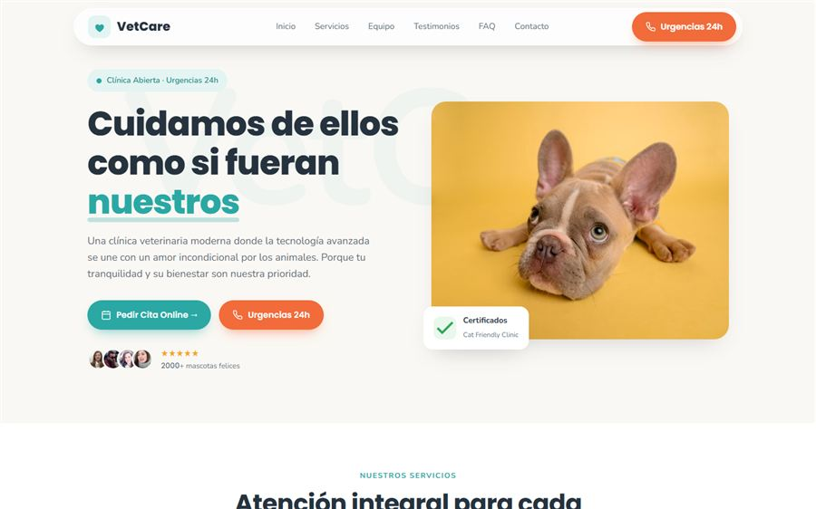

Urgencias: lo primero, siempre
Si atiendes urgencias, tiene que verse en la primera pantalla: horario de urgencias, teléfono que llama con un toque y qué hacer fuera de ese horario. Si no las atiendes, dilo también y, si puedes, indica a dónde acudir. Es lo que un dueño preocupado agradece y recuerda.
Un error habitual es esconder las urgencias en una página interior o en el pie. A las once de la noche, con el perro vomitando, nadie navega por menús.
Lo imprescindible
- Cita online o por WhatsApp. Vacunas, revisiones, desparasitaciones: citas que se planifican y que no deberían obligar a llamar en horario de consulta.
- Servicios claros. Consulta, vacunación, cirugía, dentista, peluquería, análisis, radiografía... Qué haces y qué no.
- Qué animales atiendes. Si ves exóticos (conejos, hurones, aves, reptiles), dilo: se buscan mucho y hay pocas clínicas que lo expliquen.
- Horario y cómo llegar. Con aparcamiento si lo hay: llevar un perro grande o un transportín no es lo mismo que ir andando.

El equipo vende más que las instalaciones
A un veterinario se le confía un miembro de la familia. Por eso la página del equipo funciona tan bien: caras reales, nombres y en qué se ha especializado cada uno. Una foto del equipo con los animales de la clínica transmite más que diez fotos del quirófano.
Si hay un veterinario que se encarga de exóticos o de comportamiento, que se sepa. Mucha gente busca exactamente eso.
Consejos que atraen visitas desde Google
Una sección de consejos cortos es de las pocas cosas que de verdad atraen visitas nuevas a la web de una clínica. Preguntas que te hacen en consulta cada semana, respondidas en unas líneas:
- Calendario de vacunas del cachorro y del gatito.
- Qué hacer si tu perro come chocolate o uvas.
- Procesionaria: cuándo aparece y qué síntomas vigilar.
- Cómo preparar el viaje con tu mascota.
Son búsquedas reales, con mucha gente de tu zona detrás, y cada respuesta termina con un "si tienes dudas, pide cita".
Errores habituales
- Fotos de banco de imágenes. El gatito perfecto sobre fondo blanco no es tu clínica. Mejor fotos reales, aunque sean sencillas.
- Una web lenta en el móvil. La mayoría de visitas llegan desde el móvil. Si tarda en cargar, llaman a otra.
- Un teléfono que no se puede pulsar. Parece un detalle y es la acción más importante de toda la web.

"Pon las urgencias arriba aunque no las atiendas: decir claramente «no tenemos urgencias, llama a tal sitio» genera más confianza que no decir nada. El dueño lo recuerda cuando necesita una revisión."
¿Tienes una clínica veterinaria?
Te preparo una propuesta de web con urgencias, cita y equipo, con precio cerrado en 48 horas.
Preguntas frecuentes
¿Cuánto cuesta la web de una clínica veterinaria?
Una web completa con servicios, equipo, cita por formulario o WhatsApp y Google Maps cuesta 299 € + IVA con precio cerrado. Si quieres reservas automáticas, se presupuesta aparte.
¿Es necesaria la cita online en una veterinaria?
No es imprescindible, pero ahorra muchas llamadas en horario de consulta. Un formulario o un enlace de WhatsApp para vacunas y revisiones ya cubre la mayoría de casos.
¿Qué fotos debería poner en la web de la clínica?
Fotos reales del equipo, de la sala de espera y de las consultas. Transmiten mucha más confianza que las imágenes de banco, aunque sean más sencillas.
¿Sirve de algo escribir consejos en la web?
Sí. Las preguntas que te hacen en consulta son búsquedas reales en Google. Responderlas atrae visitas de dueños de tu zona que todavía no te conocen.
Mira las webs de ejemplo por sector, incluida la de veterinaria, o cuéntame tu caso. Sigue leyendo: cómo conseguir reseñas en Google sin sonar pesado.